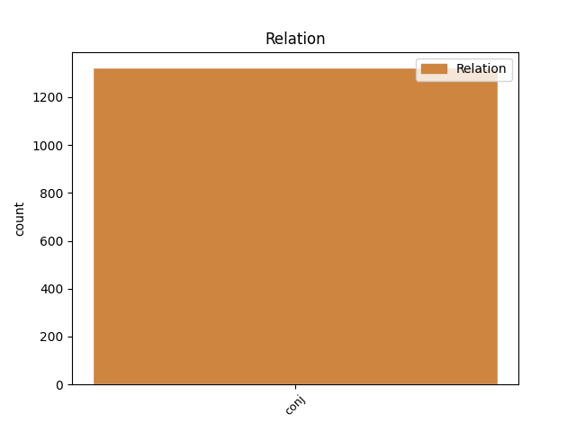
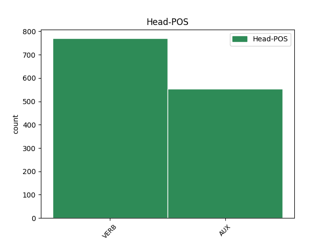
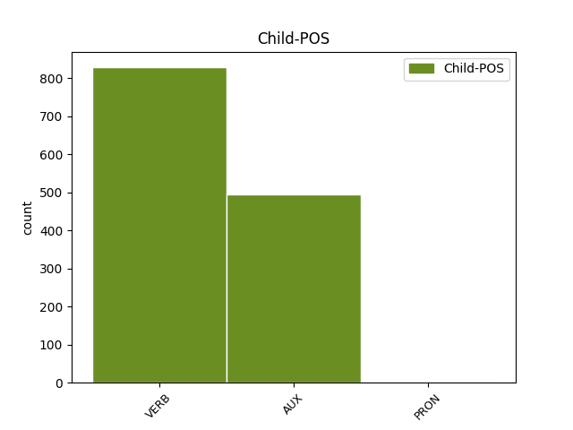

Distribution of features within this leaf



Agreement Rules sorted by frequency.
- When the dependent token is the conjunct(conj) of the head token,
1 La _ _ _ _ 0 _ _ _
2 Authority _ _ _ _ 0 _ _ _
3 per _ _ _ _ 0 _ _ _
4 Berlino _ _ _ _ 0 _ _ _
5 spera sperare VERB V Mood=Ind|Number=Sing|Person=3|Tense=Pres|VerbForm=Fin 0 _ _ _
6 molto _ _ _ _ 0 _ _ _
7 in _ _ _ _ 0 _ _ _
8 investimenti _ _ _ _ 0 _ _ _
9 per _ _ _ _ 0 _ _ _
10 spettacolo _ _ _ _ 0 _ _ _
11 e _ _ _ _ 0 _ _ _
12 cultura _ _ _ _ 0 _ _ _
13 , _ _ _ _ 0 _ _ _
14 e _ _ _ _ 0 _ _ _
15 non _ _ _ _ 0 _ _ _
16 disdegna disdegnare VERB V Mood=Ind|Number=Sing|Person=3|Tense=Pres|VerbForm=Fin 5 conj _ _
17 di _ _ _ _ 0 _ _ _
18 veder _ _ _ _ 0 _ _ _
19 sfilare _ _ _ _ 0 _ _ _
20 qui _ _ _ _ 0 _ _ _
21 gli _ _ _ _ 0 _ _ _
22 enormi _ _ _ _ 0 _ _ _
23 , _ _ _ _ 0 _ _ _
24 colorati _ _ _ _ 0 _ _ _
25 cortei _ _ _ _ 0 _ _ _
26 di _ _ _ _ 0 _ _ _
27 Ravers _ _ _ _ 0 _ _ _
28 che _ _ _ _ 0 _ _ _
29 già _ _ _ _ 0 _ _ _
30 oggi _ _ _ _ 0 _ _ _
31 percorrono _ _ _ _ 0 _ _ _
32 pacifici _ _ _ _ 0 _ _ _
33 la _ _ _ _ 0 _ _ _
34 città _ _ _ _ 0 _ _ _
35 a _ _ _ _ 0 _ _ _
36 il _ _ _ _ 0 _ _ _
37 ritmo _ _ _ _ 0 _ _ _
38 Techno _ _ _ _ 0 _ _ _
39 . _ _ _ _ 0 _ _ _
Disagree Examples:
1 La _ _ _ _ 0 _ _ _
2 quota _ _ _ _ 0 _ _ _
3 di _ _ _ _ 0 _ _ _
4 azioni _ _ _ _ 0 _ _ _
5 riservata _ _ _ _ 0 _ _ _
6 a _ _ _ _ 0 _ _ _
7 il _ _ _ _ 0 _ _ _
8 mercato _ _ _ _ 0 _ _ _
9 statunitense _ _ _ _ 0 _ _ _
10 è essere AUX VA Mood=Ind|Number=Sing|Person=3|Tense=Pres|VerbForm=Fin 0 _ _ _
11 ancora _ _ _ _ 0 _ _ _
12 top _ _ _ _ 0 _ _ _
13 secret _ _ _ _ 0 _ _ _
14 e _ _ _ _ 0 _ _ _
15 dipenderà dipendere VERB V Mood=Ind|Number=Sing|Person=3|Tense=Fut|VerbForm=Fin 10 conj _ _
16 ovviamente _ _ _ _ 0 _ _ _
17 da _ _ _ _ 0 _ _ _
18 gli _ _ _ _ 0 _ _ _
19 umori _ _ _ _ 0 _ _ _
20 di _ _ _ _ 0 _ _ _
21 il _ _ _ _ 0 _ _ _
22 mercato _ _ _ _ 0 _ _ _
23 a _ _ _ _ 0 _ _ _
24 la _ _ _ _ 0 _ _ _
25 vigilia _ _ _ _ 0 _ _ _
26 di _ _ _ _ 0 _ _ _
27 l' _ _ _ _ 0 _ _ _
28 Opv _ _ _ _ 0 _ _ _
29 . _ _ _ _ 0 _ _ _
1 Quel _ _ _ _ 0 _ _ _
2 che _ _ _ _ 0 _ _ _
3 resta _ _ _ _ 0 _ _ _
4 sarà essere AUX VA Mood=Ind|Number=Sing|Person=3|Tense=Fut|VerbForm=Fin 0 _ _ _
5 assegnato _ _ _ _ 0 _ _ _
6 a _ _ _ _ 0 _ _ _
7 gli _ _ _ _ 0 _ _ _
8 investitori _ _ _ _ 0 _ _ _
9 istituzionali _ _ _ _ 0 _ _ _
10 italiani _ _ _ _ 0 _ _ _
11 ed _ _ _ _ 0 _ _ _
12 esteri _ _ _ _ 0 _ _ _
13 , _ _ _ _ 0 _ _ _
14 ed _ _ _ _ 0 _ _ _
15 è essere AUX VA Mood=Ind|Number=Sing|Person=3|Tense=Pres|VerbForm=Fin 4 conj _ _
16 in _ _ _ _ 0 _ _ _
17 questa _ _ _ _ 0 _ _ _
18 quota _ _ _ _ 0 _ _ _
19 che _ _ _ _ 0 _ _ _
20 si _ _ _ _ 0 _ _ _
21 ricaverà _ _ _ _ 0 _ _ _
22 la _ _ _ _ 0 _ _ _
23 parte _ _ _ _ 0 _ _ _
24 da _ _ _ _ 0 _ _ _
25 destinare _ _ _ _ 0 _ _ _
26 a _ _ _ _ 0 _ _ _
27 Wall _ _ _ _ 0 _ _ _
28 Street _ _ _ _ 0 _ _ _
29 . _ _ _ _ 0 _ _ _
1 Il _ _ _ _ 0 _ _ _
2 discorso _ _ _ _ 0 _ _ _
3 di _ _ _ _ 0 _ _ _
4 replica _ _ _ _ 0 _ _ _
5 a _ _ _ _ 0 _ _ _
6 il _ _ _ _ 0 _ _ _
7 presidente _ _ _ _ 0 _ _ _
8 di _ _ _ _ 0 _ _ _
9 la _ _ _ _ 0 _ _ _
10 Confindustria _ _ _ _ 0 _ _ _
11 sarà essere AUX VA Mood=Ind|Number=Sing|Person=3|Tense=Fut|VerbForm=Fin 0 _ _ _
12 affidato _ _ _ _ 0 _ _ _
13 come _ _ _ _ 0 _ _ _
14 di _ _ _ _ 0 _ _ _
15 consueto _ _ _ _ 0 _ _ _
16 a _ _ _ _ 0 _ _ _
17 il _ _ _ _ 0 _ _ _
18 ministro _ _ _ _ 0 _ _ _
19 di _ _ _ _ 0 _ _ _
20 l' _ _ _ _ 0 _ _ _
21 industria _ _ _ _ 0 _ _ _
22 , _ _ _ _ 0 _ _ _
23 il _ _ _ _ 0 _ _ _
24 leghista _ _ _ _ 0 _ _ _
25 Vito _ _ _ _ 0 _ _ _
26 Gnutti _ _ _ _ 0 _ _ _
27 , _ _ _ _ 0 _ _ _
28 ma _ _ _ _ 0 _ _ _
29 non _ _ _ _ 0 _ _ _
30 è essere AUX VA Mood=Ind|Number=Sing|Person=3|Tense=Pres|VerbForm=Fin 11 conj _ _
31 escluso _ _ _ _ 0 _ _ _
32 un _ _ _ _ 0 _ _ _
33 saluto _ _ _ _ 0 _ _ _
34 estemporaneo _ _ _ _ 0 _ _ _
35 di _ _ _ _ 0 _ _ _
36 Silvio _ _ _ _ 0 _ _ _
37 Berlusconi _ _ _ _ 0 _ _ _
38 . _ _ _ _ 0 _ _ _
1 Di _ _ _ _ 0 _ _ _
2 il _ _ _ _ 0 _ _ _
3 resto _ _ _ _ 0 _ _ _
4 , _ _ _ _ 0 _ _ _
5 lo _ _ _ _ 0 _ _ _
6 fece fare VERB V Mood=Ind|Number=Sing|Person=3|Tense=Past|VerbForm=Fin 0 _ _ _
7 un _ _ _ _ 0 _ _ _
8 anno _ _ _ _ 0 _ _ _
9 fa _ _ _ _ 0 _ _ _
10 Carlo _ _ _ _ 0 _ _ _
11 Azeglio _ _ _ _ 0 _ _ _
12 Ciampi _ _ _ _ 0 _ _ _
13 , _ _ _ _ 0 _ _ _
14 a _ _ _ _ 0 _ _ _
15 buon _ _ _ _ 0 _ _ _
16 diritto _ _ _ _ 0 _ _ _
17 può potere AUX VM Mood=Ind|Number=Sing|Person=3|Tense=Pres|VerbForm=Fin 6 conj _ _
18 pensare _ _ _ _ 0 _ _ _
19 di _ _ _ _ 0 _ _ _
20 far _ _ _ _ 0 _ _ _
21 lo _ _ _ _ 0 _ _ _
22 Berlusconi _ _ _ _ 0 _ _ _
23 che _ _ _ _ 0 _ _ _
24 è _ _ _ _ 0 _ _ _
25 industriale _ _ _ _ 0 _ _ _
26 ed _ _ _ _ 0 _ _ _
27 è _ _ _ _ 0 _ _ _
28 stato _ _ _ _ 0 _ _ _
29 membro _ _ _ _ 0 _ _ _
30 importante _ _ _ _ 0 _ _ _
31 di _ _ _ _ 0 _ _ _
32 l' _ _ _ _ 0 _ _ _
33 organizzazione _ _ _ _ 0 _ _ _
34 di _ _ _ _ 0 _ _ _
35 gli _ _ _ _ 0 _ _ _
36 industriali _ _ _ _ 0 _ _ _
37 , _ _ _ _ 0 _ _ _
38 fino _ _ _ _ 0 _ _ _
39 a _ _ _ _ 0 _ _ _
40 essere _ _ _ _ 0 _ _ _
41 membro _ _ _ _ 0 _ _ _
42 di _ _ _ _ 0 _ _ _
43 il _ _ _ _ 0 _ _ _
44 consiglio _ _ _ _ 0 _ _ _
45 direttivo _ _ _ _ 0 _ _ _
46 . _ _ _ _ 0 _ _ _
1 I _ _ _ _ 0 _ _ _
2 difensori _ _ _ _ 0 _ _ _
3 di _ _ _ _ 0 _ _ _
4 l' _ _ _ _ 0 _ _ _
5 attuale _ _ _ _ 0 _ _ _
6 ordinamento _ _ _ _ 0 _ _ _
7 di _ _ _ _ 0 _ _ _
8 i _ _ _ _ 0 _ _ _
9 servizi _ _ _ _ 0 _ _ _
10 erano essere AUX VA Mood=Ind|Number=Plur|Person=3|Tense=Imp|VerbForm=Fin 0 _ _ _
11 fortunosamente _ _ _ _ 0 _ _ _
12 riusciti _ _ _ _ 0 _ _ _
13 ad _ _ _ _ 0 _ _ _
14 affossare _ _ _ _ 0 _ _ _
15 la _ _ _ _ 0 _ _ _
16 mini _ _ _ _ 0 _ _ _
17 riforma _ _ _ _ 0 _ _ _
18 elaborata _ _ _ _ 0 _ _ _
19 da _ _ _ _ 0 _ _ _
20 il _ _ _ _ 0 _ _ _
21 governo _ _ _ _ 0 _ _ _
22 Ciampi _ _ _ _ 0 _ _ _
23 , _ _ _ _ 0 _ _ _
24 che _ _ _ _ 0 _ _ _
25 tentava _ _ _ _ 0 _ _ _
26 di _ _ _ _ 0 _ _ _
27 ricondur _ _ _ _ 0 _ _ _
28 ne _ _ _ _ 0 _ _ _
29 a _ _ _ _ 0 _ _ _
30 palazzo _ _ _ _ 0 _ _ _
31 Chigi _ _ _ _ 0 _ _ _
32 il _ _ _ _ 0 _ _ _
33 controllo _ _ _ _ 0 _ _ _
34 politico _ _ _ _ 0 _ _ _
35 generale _ _ _ _ 0 _ _ _
36 e _ _ _ _ 0 _ _ _
37 , _ _ _ _ 0 _ _ _
38 con _ _ _ _ 0 _ _ _
39 maggiore _ _ _ _ 0 _ _ _
40 efficacia _ _ _ _ 0 _ _ _
41 , _ _ _ _ 0 _ _ _
42 quello _ _ _ _ 0 _ _ _
43 finanziario _ _ _ _ 0 _ _ _
44 , _ _ _ _ 0 _ _ _
45 ma _ _ _ _ 0 _ _ _
46 ora _ _ _ _ 0 _ _ _
47 l' _ _ _ _ 0 _ _ _
48 ex _ _ _ _ 0 _ _ _
49 presidente _ _ _ _ 0 _ _ _
50 di _ _ _ _ 0 _ _ _
51 la _ _ _ _ 0 _ _ _
52 repubblica _ _ _ _ 0 _ _ _
53 propone proporre VERB V Mood=Ind|Number=Sing|Person=3|Tense=Pres|VerbForm=Fin 10 conj _ _
54 il _ _ _ _ 0 _ _ _
55 commissariamento _ _ _ _ 0 _ _ _
56 immediato _ _ _ _ 0 _ _ _
57 di _ _ _ _ 0 _ _ _
58 il _ _ _ _ 0 _ _ _
59 Sismi _ _ _ _ 0 _ _ _
60 , _ _ _ _ 0 _ _ _
61 di _ _ _ _ 0 _ _ _
62 il _ _ _ _ 0 _ _ _
63 Sisde _ _ _ _ 0 _ _ _
64 e _ _ _ _ 0 _ _ _
65 di _ _ _ _ 0 _ _ _
66 l' _ _ _ _ 0 _ _ _
67 organo _ _ _ _ 0 _ _ _
68 di _ _ _ _ 0 _ _ _
69 coordinamento _ _ _ _ 0 _ _ _
70 di _ _ _ _ 0 _ _ _
71 la _ _ _ _ 0 _ _ _
72 presidenza _ _ _ _ 0 _ _ _
73 di _ _ _ _ 0 _ _ _
74 il _ _ _ _ 0 _ _ _
75 consiglio _ _ _ _ 0 _ _ _
76 , _ _ _ _ 0 _ _ _
77 il _ _ _ _ 0 _ _ _
78 Cesis _ _ _ _ 0 _ _ _
79 , _ _ _ _ 0 _ _ _
80 come _ _ _ _ 0 _ _ _
81 preludio _ _ _ _ 0 _ _ _
82 a _ _ _ _ 0 _ _ _
83 una _ _ _ _ 0 _ _ _
84 riforma _ _ _ _ 0 _ _ _
85 radicale _ _ _ _ 0 _ _ _
86 . _ _ _ _ 0 _ _ _